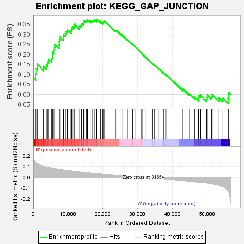
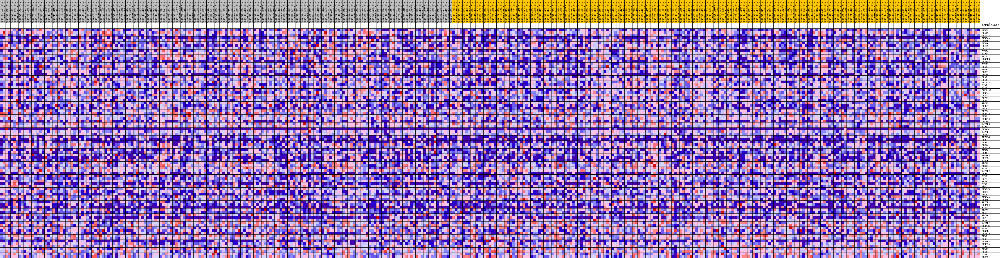
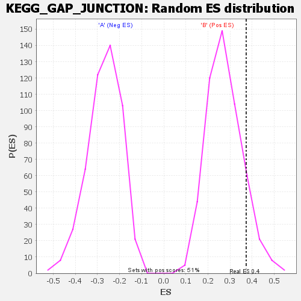

| | | Dataset | my.my.cls#B_versus_A.my.cls#B_versus_A_repos |
| Phenotype | my.cls#B_versus_A_repos |
| Upregulated in class | B |
| GeneSet | KEGG_GAP_JUNCTION |
| Enrichment Score (ES) | 0.3728937 |
| Normalized Enrichment Score (NES) | 1.3577306 |
| Nominal p-value | 0.11890838 |
| FDR q-value | 0.47034782 |
| FWER p-Value | 0.893 |
Table: GSEA Results Summary

Fig 1: Enrichment plot: KEGG_GAP_JUNCTION
Profile of the Running ES Score & Positions of GeneSet Members on the Rank Ordered List
| SYMBOL | TITLE | RANK IN GENE LIST | RANK METRIC SCORE | RUNNING ES | CORE ENRICHMENT | | 1 | TUBB3 | na | 70 | 0.186 | 0.0395 | Yes |
| 2 | GNAI2 | na | 77 | 0.185 | 0.0800 | Yes |
| 3 | TUBA1A | na | 679 | 0.139 | 0.0998 | Yes |
| 4 | TUBB4A | na | 808 | 0.135 | 0.1272 | Yes |
| 5 | PDGFB | na | 1154 | 0.126 | 0.1488 | Yes |
| 6 | TUBB6 | na | 2990 | 0.101 | 0.1384 | Yes |
| 7 | PRKG2 | na | 3776 | 0.094 | 0.1452 | Yes |
| 8 | PRKACA | na | 4181 | 0.091 | 0.1580 | Yes |
| 9 | HTR2A | na | 4482 | 0.089 | 0.1722 | Yes |
| 10 | MAPK1 | na | 5290 | 0.084 | 0.1764 | Yes |
| 11 | PRKX | na | 5463 | 0.083 | 0.1915 | Yes |
| 12 | PDGFRB | na | 5494 | 0.083 | 0.2091 | Yes |
| 13 | TUBB2B | na | 5905 | 0.080 | 0.2195 | Yes |
| 14 | ITPR2 | na | 6004 | 0.080 | 0.2352 | Yes |
| 15 | GNAI1 | na | 6226 | 0.079 | 0.2486 | Yes |
| 16 | PDGFC | na | 7359 | 0.073 | 0.2446 | Yes |
| 17 | PLCB1 | na | 7387 | 0.073 | 0.2601 | Yes |
| 18 | ADCY8 | na | 7431 | 0.073 | 0.2753 | Yes |
| 19 | LPAR1 | na | 7669 | 0.072 | 0.2868 | Yes |
| 20 | CDK1 | na | 8770 | 0.067 | 0.2820 | Yes |
| 21 | PRKACB | na | 8823 | 0.067 | 0.2957 | Yes |
| 22 | GJA1 | na | 9255 | 0.065 | 0.3023 | Yes |
| 23 | RAF1 | na | 9467 | 0.064 | 0.3126 | Yes |
| 24 | GUCY1A2 | na | 9888 | 0.062 | 0.3188 | Yes |
| 25 | PDGFA | na | 10814 | 0.059 | 0.3153 | Yes |
| 26 | GRB2 | na | 11019 | 0.058 | 0.3244 | Yes |
| 27 | PRKG1 | na | 11187 | 0.057 | 0.3341 | Yes |
| 28 | TUBB1 | na | 11685 | 0.055 | 0.3374 | Yes |
| 29 | ADCY3 | na | 11792 | 0.055 | 0.3476 | Yes |
| 30 | ADRB1 | na | 13153 | 0.050 | 0.3345 | Yes |
| 31 | ADCY2 | na | 13390 | 0.049 | 0.3412 | Yes |
| 32 | PRKCA | na | 13897 | 0.047 | 0.3426 | Yes |
| 33 | TUBA1B | na | 13983 | 0.047 | 0.3515 | Yes |
| 34 | TUBB | na | 14451 | 0.046 | 0.3532 | Yes |
| 35 | CSNK1D | na | 14499 | 0.046 | 0.3624 | Yes |
| 36 | ADCY5 | na | 14923 | 0.044 | 0.3646 | Yes |
| 37 | MAP2K5 | na | 15385 | 0.043 | 0.3658 | Yes |
| 38 | MAPK7 | na | 15637 | 0.042 | 0.3706 | Yes |
| 39 | TUBA3C | na | 16346 | 0.040 | 0.3668 | Yes |
| 40 | MAP2K1 | na | 16959 | 0.038 | 0.3643 | Yes |
| 41 | GNAS | na | 17183 | 0.037 | 0.3685 | Yes |
| 42 | PRKACG | na | 17521 | 0.036 | 0.3706 | Yes |
| 43 | DRD2 | na | 18162 | 0.035 | 0.3668 | Yes |
| 44 | GRM5 | na | 18248 | 0.034 | 0.3729 | Yes |
| 45 | ADCY4 | na | 19259 | 0.032 | 0.3619 | No |
| 46 | TUBA3D | na | 19959 | 0.030 | 0.3561 | No |
| 47 | TUBB8 | na | 20190 | 0.029 | 0.3584 | No |
| 48 | GRM1 | na | 20365 | 0.029 | 0.3616 | No |
| 49 | PDGFRA | na | 20618 | 0.028 | 0.3633 | No |
| 50 | PRKCG | na | 23529 | 0.020 | 0.3162 | No |
| 51 | HTR2B | na | 23724 | 0.020 | 0.3172 | No |
| 52 | ADCY9 | na | 24042 | 0.019 | 0.3157 | No |
| 53 | ADCY7 | na | 25166 | 0.016 | 0.2993 | No |
| 54 | SOS1 | na | 25614 | 0.015 | 0.2947 | No |
| 55 | MAP2K2 | na | 27050 | 0.011 | 0.2718 | No |
| 56 | DRD1 | na | 28499 | 0.008 | 0.2479 | No |
| 57 | ITPR1 | na | 28615 | 0.007 | 0.2475 | No |
| 58 | EGFR | na | 29493 | 0.005 | 0.2331 | No |
| 59 | HRAS | na | 31126 | 0.001 | 0.2045 | No |
| 60 | GJD2 | na | 31294 | 0.001 | 0.2018 | No |
| 61 | SRC | na | 31339 | 0.001 | 0.2012 | No |
| 62 | TUBB4B | na | 31392 | 0.001 | 0.2004 | No |
| 63 | PLCB4 | na | 32447 | -0.002 | 0.1822 | No |
| 64 | ADCY1 | na | 34138 | -0.006 | 0.1536 | No |
| 65 | TUBA4A | na | 34313 | -0.007 | 0.1520 | No |
| 66 | TUBA8 | na | 34705 | -0.008 | 0.1467 | No |
| 67 | PRKCB | na | 34892 | -0.008 | 0.1452 | No |
| 68 | TUBA3E | na | 36080 | -0.011 | 0.1266 | No |
| 69 | HTR2C | na | 37456 | -0.015 | 0.1054 | No |
| 70 | PLCB2 | na | 38162 | -0.016 | 0.0965 | No |
| 71 | KRAS | na | 38448 | -0.017 | 0.0953 | No |
| 72 | ADCY6 | na | 42912 | -0.030 | 0.0228 | No |
| 73 | EGF | na | 43055 | -0.030 | 0.0270 | No |
| 74 | NRAS | na | 44857 | -0.036 | 0.0029 | No |
| 75 | MAP3K2 | na | 46309 | -0.041 | -0.0139 | No |
| 76 | TUBA1C | na | 47458 | -0.045 | -0.0244 | No |
| 77 | MAPK3 | na | 47515 | -0.045 | -0.0155 | No |
| 78 | PDGFD | na | 47569 | -0.045 | -0.0066 | No |
| 79 | TUBB7P | na | 48020 | -0.047 | -0.0043 | No |
| 80 | GNAQ | na | 49856 | -0.055 | -0.0248 | No |
| 81 | SOS2 | na | 49991 | -0.055 | -0.0150 | No |
| 82 | TUBAL3 | na | 50031 | -0.055 | -0.0036 | No |
| 83 | TUBB2A | na | 51263 | -0.062 | -0.0118 | No |
| 84 | TJP1 | na | 51411 | -0.063 | -0.0006 | No |
| 85 | GNAI3 | na | 53328 | -0.076 | -0.0179 | No |
| 86 | GNA11 | na | 54461 | -0.088 | -0.0187 | No |
| 87 | ITPR3 | na | 56072 | -0.126 | -0.0196 | No |
| 88 | PLCB3 | na | 56203 | -0.133 | 0.0074 | No |
Table: GSEA details [plain text format]

Fig 2: KEGG_GAP_JUNCTION
Blue-Pink O' Gram in the Space of the Analyzed GeneSet

Fig 3: KEGG_GAP_JUNCTION: Random ES distribution
Gene set null distribution of ES for KEGG_GAP_JUNCTION